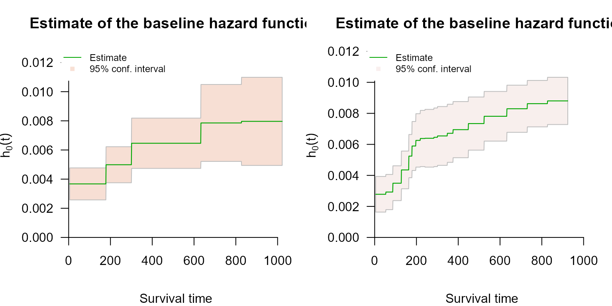

Control Parameters
control-parameters.RmdOverview
coxph_mpl() runs with defaults that work for most
datasets, so the tutorials call it with nothing but a formula and a data
frame. When a fit needs tuning - a different baseline hazard basis, more
or fewer knots, a fixed smoothing value, longer iteration limits - the
settings live in coxph_mpl.control().
There are two equivalent ways to change them:
# 1. pass control arguments directly; coxph_mpl() forwards them
coxph_mpl(Surv(time, status) ~ x, data = df, basis = "msplines", tol = 1e-5)
# 2. build the control object explicitly
coxph_mpl(Surv(time, status) ~ x, data = df,
control = coxph_mpl.control(n.obs = sum(df$status),
basis = "msplines", tol = 1e-5))The first form is shorter and is what the other articles use. The
second is needed when the same settings are reused across several fits.
Note the n.obs argument in the second form:
coxph_mpl.control() uses the number of fully observed
events to set defaults, and cannot count them itself, so a hand-built
control object must be told. Called through ...,
coxph_mpl() counts them for you.
A control object is a plain list with validated entries:
library(survivalMPL)
#> Loading required package: survival
#> Loading required package: MASS
library(survival)
str(coxph_mpl.control(n.obs = 165))
#> List of 16
#> $ basis : chr "uniform"
#> $ smooth : num 0
#> $ max.iter : int [1:3] 150 75000 1000000
#> $ tol : num 1e-07
#> $ order : int 3
#> $ penalty : int 2
#> $ n.knots : num [1:2] 8 2
#> $ range.quant : num [1:2] 0.075 0.9
#> $ cover.sigma.quant: num 0.25
#> $ cover.sigma.fixed: num 0.25
#> $ n.events_basis : int 10
#> $ min.theta : num 1e-10
#> $ ties : chr "epsilon"
#> $ seed : int(0)
#> $ kappa : num 1.67
#> $ epsilon : num [1:2] 1e-16 1e-10
#> - attr(*, "class")= chr "coxph_mpl.control"Every argument is validated on the way in: values outside their admissible range are silently replaced by the default rather than passed on to the optimiser, so an impossible setting cannot produce a meaningless fit.
The baseline hazard
basis
Which family of non-negative functions is used to build :
| Value | Aliases | Shape |
|---|---|---|
"uniform" |
"u", "uni"
|
Piecewise-constant step functions (default) |
"msplines" |
"m", "ms"
|
M-splines of order order
|
"gaussian" |
"g", "gauss"
|
Truncated Gaussian kernels |
"epanechikov" |
"e", "epa",
"epanechnikov"
|
Epanechnikov kernels |
"uniform" is the fastest and gives coefficients
that read directly as the hazard rate on knot interval
.
"msplines" is the usual choice when a smooth
matters, in particular for interval-censored data where
enters the likelihood at both endpoints. Basis Functions for the
Baseline Hazard defines each one and compares them on the same
data.
n.knots and range.quant
n.knots is a length-2 vector c(k1, k2). The
first entry places
knots at quantiles of the observed event times up to
range.quant[2] (the 90th percentile by default); the second
places
equally spaced knots above that quantile. When k2 = 0, all
knots are quantile-based over the whole range. Defaults are
c(8, 2) for "uniform" and
"msplines", and c(0, 20) for the two kernel
bases.
More knots mean a more flexible and a larger to estimate; the penalty, not the knot count, is what should control smoothness, so a moderately generous knot count with automatic smoothing is usually better than a small one:
lung <- na.omit(lung[, c("time", "status", "age", "sex", "ph.karno", "wt.loss")])
f <- Surv(time, status == 2) ~ age + sex + ph.karno + wt.loss
fit_coarse <- coxph_mpl(f, data = lung, n.knots = c(3, 1), tol = 1e-5)
fit_fine <- coxph_mpl(f, data = lung, n.knots = c(15, 3), tol = 1e-5)
c(coarse = fit_coarse$knots$m, fine = fit_fine$knots$m)
#> coarse fine
#> 5 19
round(cbind(coarse = coef(fit_coarse), fine = coef(fit_fine)), 4)
#> coarse fine
#> age 0.0145 0.0142
#> sex -0.5077 -0.5087
#> ph.karno -0.0116 -0.0119
#> wt.loss -0.0016 -0.0018The regression coefficients barely move; what changes is the resolution of the baseline hazard.
par(mfrow = c(1, 2), mar = c(4, 4, 3, 1))
plot(fit_coarse, which = 2, ask = FALSE, cex.main = 0.85)
plot(fit_fine, which = 2, ask = FALSE, cex.main = 0.85)
order and penalty
order is the order of the M-spline or Epanechnikov basis
(default 3, cubic M-splines). Order 1 M-splines coincide with the
uniform basis and order 2 with a triangular basis.
penalty is the order of the roughness penalty: 1
penalises the first differences of
,
2 the second differences. The uniform and Gaussian bases accept either;
the Epanechnikov basis always uses second order, and M-splines use
order - 1. The default is 2.
Smoothing: smooth
The penalised log-likelihood maximised by coxph_mpl()
is
where
is the roughness matrix of the chosen basis and
is the smoothing value (Ma et al. 2014).
smooth sets
:
smooth |
Effect |
|---|---|
NULL (default) |
selected automatically from the data |
0 |
No penalty at all: plain maximum likelihood |
| any | held fixed at that value |
Automatic selection is the default, and is the marginal likelihood method of Ma et al. (2024) (Section 2.10). The quadratic penalty is read as a normal prior with ; and are integrated out, and a Laplace approximation to the resulting marginal likelihood gives the update , where is the model degrees of freedom. Since the estimates and depend on each other, this alternates: inner iterations fit and at the current , then an outer iteration updates , until stabilises.
Whether
was selected or fixed is visible in the fitted object: supplying
smooth sets max.iter[1] to 1, which switches
the outer iterations off, and summary() reports the value
as fixed rather than estimated. The final
- selected or not - is stored in fit$control$smooth.
fit_ml <- coxph_mpl(f, data = lung, smooth = 0) # unpenalised
fit_auto <- coxph_mpl(f, data = lung) # automatic smoothing value
fit_hard <- coxph_mpl(f, data = lung, smooth = 1e8) # heavily penalised
c(ml = fit_ml$control$smooth,
automatic = fit_auto$control$smooth,
hard = fit_hard$control$smooth)
#> ml automatic hard
#> 0 19163433 100000000Choosing by hand
is not scale-free. It trades off against the size of
,
which depends on the time units, the basis and the number of knots, so
the value that oversmooths one dataset is negligible on another - the
selected value above is of order
only because lung measures time in days, making the hazard
rates themselves of order
.
There is no portable rule of thumb, which is the reason to leave
smooth = NULL unless there is a specific reason not to. If
a fixed value is needed, fit a small grid and inspect
,
rather than transplanting a value from another analysis. Extremely large
values eventually break the fit rather than flattening it: on
lung,
drives the estimate to a degenerate solution with an attenuated
sex coefficient.
The optimiser
| Argument | Meaning | Default |
|---|---|---|
max.iter |
Length-3 vector: (1) outer smoothing-parameter updates, (2) inner / updates, (3) total inner iterations | c(150, 7.5e4, 1e6) |
tol |
Convergence tolerance: on the parameter change between inner
iterations, and, as 10 * tol, on the change in the degrees
of freedom
between outer iterations |
1e-7 |
kappa |
Step-size reduction factor (> 1) applied when the penalised likelihood fails to increase | 1/0.6 |
min.theta |
below this are reported as zero, i.e. as active non-negativity constraints | 1e-10 |
epsilon |
Length-2 floor on survival and baseline hazard values, guarding the logarithms | c(1e-16, 1e-10) |
Setting smooth to a fixed value forces
max.iter[1] to 1, since there is no outer loop left to run.
summary() prints whether the algorithm converged and how
many outer and inner iterations it used; fit$iter holds the
same two numbers:
fit_auto$iter # c(outer iterations, total inner iterations)
#> [1] 150 4268If either equals its cap the fit has not converged, and
summary() says Convergence: NO.
fit_auto above is such a fit: with everything at its
default it stops at the cap of 150 outer iterations without the degrees
of freedom having settled.
The reason is the stopping rule rather than the data. The outer loop
stops when
changes by less than 10 * tol, which is
at the default tol = 1e-7, whereas Ma et al. (2024) describe stability in
as changes “not greater than, say, 1 or 0.5”. Asking for six decimal
places of a quantity the method itself treats as settled at half a unit
is what keeps the loop running. Either loosening tol to the
the book uses in its own examples, or raising the cap, produces the same
fit:
fit_tol <- coxph_mpl(f, data = lung, tol = 1e-05)
fit_more <- coxph_mpl(f, data = lung, max.iter = c(600, 7.5e4, 1e6))
rbind(`tol = 1e-05` = fit_tol$iter,
`max.iter 600` = fit_more$iter)
#> [,1] [,2]
#> tol = 1e-05 101 571
#> max.iter 600 492 5196
round(cbind(`default (capped)` = coef(fit_auto),
`tol = 1e-05` = coef(fit_tol),
`max.iter 600` = coef(fit_more)), 4)
#> default (capped) tol = 1e-05 max.iter 600
#> age 0.0146 0.0144 0.0146
#> sex -0.5108 -0.5103 -0.5108
#> ph.karno -0.0118 -0.0117 -0.0118
#> wt.loss -0.0018 -0.0017 -0.0018The three sets of coefficients differ by at most a twentieth of a
standard error, so the capped fit was not wrong - but a fit that reports
non-convergence should not be published on the strength of that, and
tol = 1e-05 is the cheaper of the two ways out. If neither
helps, the usual causes are too many knots for the number of events, or
a covariate on a very different scale from the others.
Ties: ties and seed
Knot sequences are built from the distinct fully observed event times. Duplicated event times therefore have to be resolved:
-
ties = "epsilon"(default) jitters duplicates by a small random amount; -
ties = "unique"drops duplicates before computing quantiles.
Because "epsilon" uses the random number generator,
seed fixes it so the knots - and hence the fit - are
exactly reproducible:
fit_a <- coxph_mpl(f, data = lung, ties = "epsilon", seed = 42)
fit_b <- coxph_mpl(f, data = lung, ties = "epsilon", seed = 42)
identical(coef(fit_a), coef(fit_b))
#> [1] TRUEThe current RNG state is restored afterwards, so setting
seed does not disturb any simulation running around the
fit.
Full argument list
| Argument | Purpose |
|---|---|
n.obs |
Number of fully observed events; used to derive defaults |
basis |
Basis for |
smooth |
Smoothing value
;
NULL = automatic selection, 0 = no
penalty |
max.iter |
Iteration limits for the three optimisation stages |
tol |
Convergence tolerance |
n.knots |
Quantile and equally spaced internal knot counts |
range.quant |
Quantile range for the quantile-based knots |
order |
Order of the M-spline / Epanechnikov basis |
penalty |
Order of the roughness penalty |
cover.sigma.quant, cover.sigma.fixed
|
Bandwidth targets for the Gaussian basis |
min.theta |
Threshold below which is reported as zero |
kappa |
Step-size reduction factor |
epsilon |
Numerical floors for survival and hazard values |
ties |
Tie-breaking strategy for duplicated event times |
seed |
RNG seed used when ties = "epsilon"
|
n.events_basis |
Events per uniform basis element; retained for backward compatibility, not used by the current knot construction |
See ?coxph_mpl.control for the full argument
documentation.
Practical recipes
- Start with the defaults. Uniform basis, automatic smoothing, default knots.
-
Interval- or left-censored data:
basis = "msplines", since is evaluated at both interval endpoints and a step function makes that estimate coarse. -
Comparing bases or reproducing a maximum likelihood
fit:
smooth = 0. -
Left truncation (
entry):basis = "uniform"- the only basis for which differencing the cumulative basis is implemented. Any other basis is replaced by"uniform"with a warning. -
A fit that will not converge: set
tol = 1e-05first - the outer loop stopping rule at the default tolerance is stricter than the method needs - then raisemax.iter, then reducen.knots.